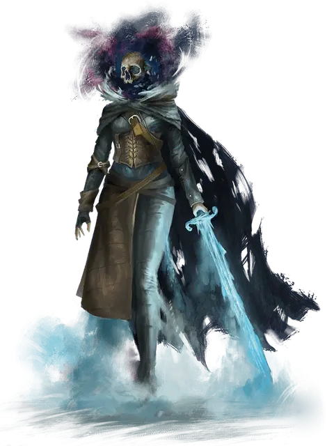

Зловещий чемпион опустошения
Grim Champion of Desolation
Средняя Нежить, законно-злая, именной НИП

Класс Доспеха 18 (проклёпанный доспех)
Хиты 416 (49к8 + 196)
Скорость 30 футов
| мод | спас | ||
|---|---|---|---|
| СИЛ | 22 | +6 | +6 |
| ЛОВ | 23 | +6 | +14 |
| ТЕЛ | 18 | +4 | +12 |
| мод | спас | ||
|---|---|---|---|
| ИНТ | 12 | +1 | +1 |
| МДР | 20 | +5 | +13 |
| ХАР | 19 | +4 | +4 |
Навыки Восприятие +13, Обман +12, Проницательность +13, Скрытность +14
Сопротивление урону некротическая энергия, холод; дробящий, колющий, рубящий от немагических атак
Иммунитет к урону яд
Иммунитет к состояниям бессознательность, глухота, испуг, истощение, ослепление, отравление, очарование, ошеломление
Чувства тёмное зрение 60 футов, пассивное Восприятие 23
Языки Общий, Эльфийский
Опасность 25 (75000 опыта)
Бонус мастерства +8
Особенности
Легендарное сопротивление (3/день). Если чемпион проваливает спасбросок, он может вместо этого сделать спасбросок успешным.
Действия
Мультиатака. Чемпион совершает две атаки Высасывающим клинком и использует Незаполняемую пустоту.
Высасывающий клинок. . Рукопашная атака оружием: +14 к попаданию, досягаемость 5 футов, одна цель. Попадание: 13 (2к6 + 6) рубящего урона плюс 33 (6к10) урона холодом и чемпион восстанавливает 10 хитов.
Незаполняемая пустота. Чемпион вызывает ненасытный разлом вокруг существа, которое он может видеть в пределах 120 футов. Существо должно совершить спасбросок Телосложения Сл 22. При провале существо получает 49 (11к8) урона силовым полем и становится ошеломлённым до начала следующего хода чемпиона. В случае успеха существо получает только половину этого урона. Если этот эффект уменьшает хиты существа до 0, оно умирает, а его тело рассыпается в прах.
Бонусные действия
Шаг в ничто (перезарядка 4-6). Чемпион, вместе с любым снаряжением, которое он несёт или носит, становится невидимым и телепортируется в незанятое пространство, которое он может видеть в пределах 30 футов. Чемпион остается невидимым до начала своего следующего хода или сразу после того, как он нанесет урон.
Легендарные действия
Чемпион может совершать 3 легендарных действия, выбирая из указанных ниже вариантов. Лишь одно легендарное действие может быть совершено за раз, и только в конце хода другого существа. Чемпион восстанавливает истраченные действия в начале своего хода.
Сокрушение. Чемпион обрушивает поток сокрушительной силы на существо, которое он может видеть в пределах 30 футов. Существо должно преуспеть в спасброске Силы Сл 22, иначе получит 14 (4к6) урона силовым полем и упадёт ничком.
Устрашающая погоня. Чемпион перемещается на свою скорость или приказывает своему скакуну переместиться на свою скорость. Это перемещение не провоцирует атак.
Обнуление (стоит 2 действия). Чемпион испускает магическую волну в виде 60-футового конуса. Каждое заклинание 5-го уровня или ниже, наложенные на существах и предметах, в этой области, по выбору чемпиона оканчиваются.
Описание
Джин Корвис, бывшая искательница приключений, возможно, была первым человеком, который вытянул карту Череп из колоды многих вещей [deck of many things] и была убита образом смерти [avatar of Death]. Даже Джин не знает наверняка, поскольку это настолько давно, что она забыла почти всё о своей прежней жизни. Существование Джин на протяжении стольких столетий ввергло её в мучительные страдания, и теперь нигилизм - это все, что движет ею. Больше, чем любой другой член "Зловещих разорителей", Джин отчаянно хочет уничтожить колоду и покончить со своим мучительным существованием. Если бы она могла, то забрала бы с собой всю мультивселенную.
Мрачный чемпион Опустошения скачет верхом на злобном драконоподобном звере с бледными кожистыми крыльями и истощенной кожей; этот скакун использует блок характеристик виверна [wyvern], который является Нежитью, а не Драконом. Жуткая, глухая тишина возвещает о прибытии чемпиона.
Зловещие разорители
Мрачную Борону возглавляют три могущественных существа с титулом Зловещего чемпиона. Каждый чемпион воплощает в себе ужасную грань смерти. Джин Корвис, Зловещий чемпион Опустошения, является старейшим и самым могущественным из трёх и воплощает всепоглощающее ничто. Давным-давно она привела Мрачную Борону в Сады Наслаждения и является номинальным лидером всей нежити на демиплане. Два других чемпиона — Вайнемар Брэк, Зловещий чемпион Кровопролития, и Алерон, Зловещий чемпион Мора — соперничают с Джин за власть и вместе могут противостоять ей. Тот факт, что три чемпиона редко приходят к согласию в чем-либо, является серьезной проверкой силы группы. Вместо того, чтобы "Зловещие разорители" действовала как единая сила, каждый из трех чемпионов обычно преследует свои собственные интересы, редко сотрудничая или делясь разведданными или ресурсами.